Kisumu is Kenya's third largest city, and a major port on Lake Victoria. Others say it is because Uganda has built a second dam on Lake Victoria. Lake Victoria feeds the Nile River, and is home to a diverse array of fish species. I went to Kisumu to visit the city, buy a little white elephant, and visit KeMRI (Kenya Medical Research Institute).
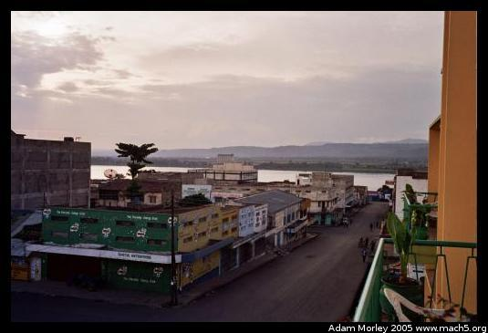 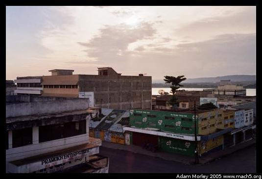 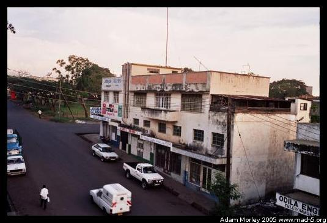The view from my hotel room (the New Victoria Hotel) in Kisumu. You can see Lake Victoria in the distance.
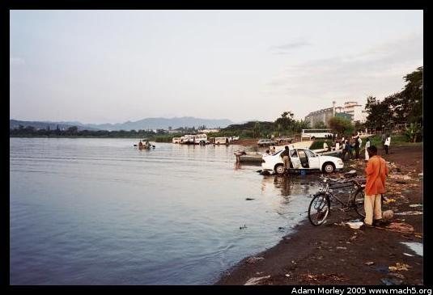 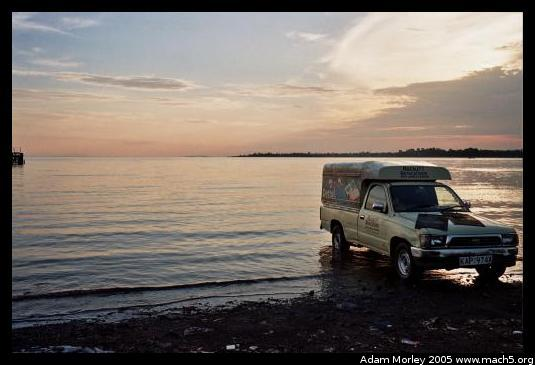Lakeside at Lake Victoria. You can see some taxi drivers washing their cars with the lake water.
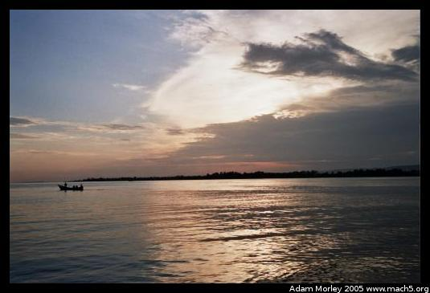Lake Victoria at sunset.
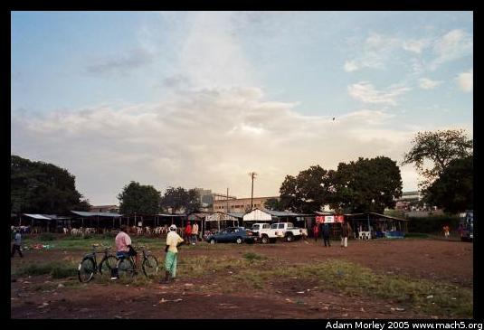At the lake shore, there are outdoor "hotels" for people to go in the evening. But with no beds.
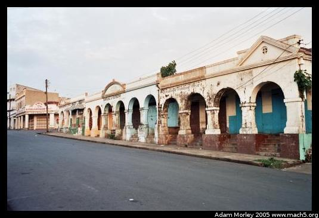 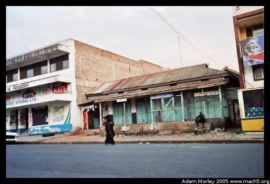The streets of Kisumu.
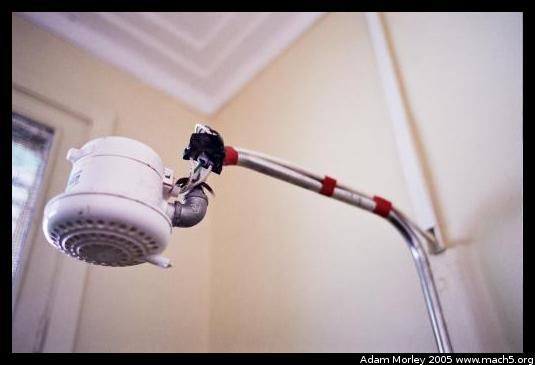The water heater on my shower. It was great. Hot water. So nice. Not a shower from a bucket, but a real shower. Especially since it worked and the electrical-taped splice job didn't get wet...
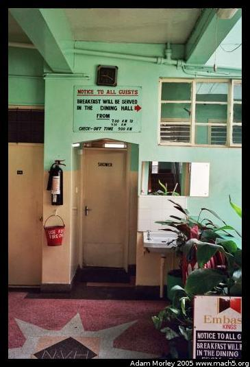Inside the hotel. Notice the bucket "USE FOR FIRE ONLY."
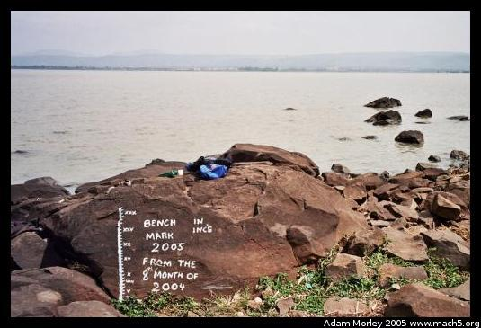The next day, I went down to Lake Victoria to see the hippos. The above photo shows an indicator of how far Lake Victoria has gone down over the last year (I took the photo in the ninth month of 2005). Many scientists say this is part of global warming.
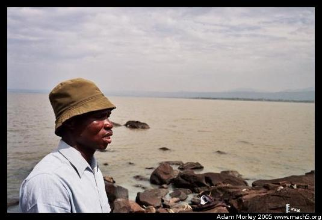But this man, who often takes people out in his boat to see the hippos reflects on a time when he was young and the lake was at a similar level. Since the lake feeds the Nile River, it is quite important for northeastern Africa. As I mentioned earlier, Lake Victoria (and surrounding lakes) is home to a diversity of fish species. Current theories are that the lake was subdivided into smaller lakes as it dried out over the centuries, yielding closed environments for evolution to take place.
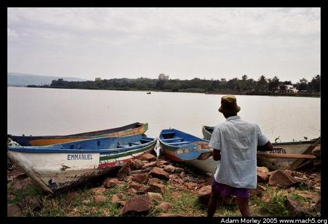So I negotiated a price to go out in his boat and see the hippos.
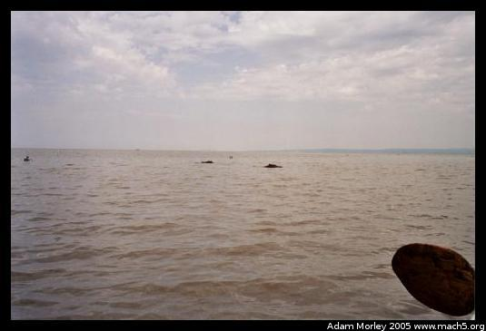Don't get too close. They can get unhappy!
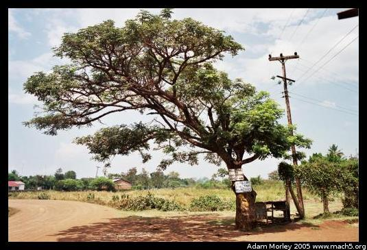If you're ever in the neighborhood, just hop a boda boda (bicycle taxi) and head for Hippo Point. You'll know you're near when you see this tree. Hippo Point is quite neat at night --- the hippos come out of the water and feed. But, according to the owner of the New Victoria, the point is not safe for mzungus at night.
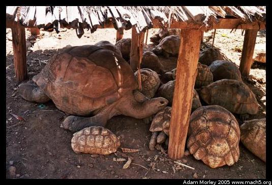I spent some time at a wildlife park, where I saw these massive turtles. The big one is about three feet long (one meter).
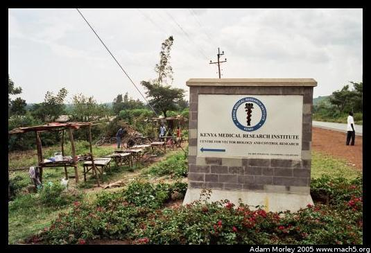And on my way back to Kabula, I stopped at KeMRI, where they do research into all sorts of diseases. The CDC maintains an office at KeMRI, as does Walter Reed Army Medical Center. Walter Reed maintains a presence because part of their mission is research into diseases which affect soldiers. Malaria is rife in Afghanistan and parts of Iraq.
The CDC will often respond to outbreaks of diseases which baffle local doctors. They just finished a long-term study with mosquito nets in an area around Lake Victoria, with good success. One of the things they learned is that blanketing an area with mosquito nets not only reduces incidence of malaria for those who receive nets, but for those nearby. This is likely because there are fewer human hosts to re-infect the female Anopheles gambiae. I met with two CDC researchers: an Epidemiologist named Daniel Feikin, and an Entomologist named Robert Wirtz. Dr. Wirtz was helpful in explaining malaria, modes of transmission, and methods of control. He also provided a great historical background on malaria in the USA. Dr. Feikin was very helpful in explaining how he got to be where he is today, through medical school and a CDC training program in epidemiology.
Adam can be reached at adam dot morley at gmail dot com